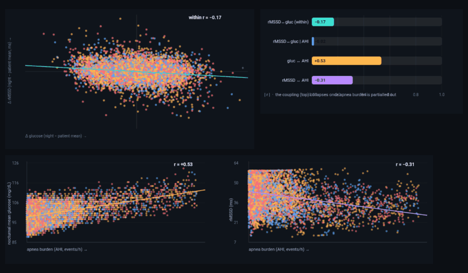

GlucoDex × PulseDex nodes, Tepna physiological-signal suite
Background. A multi-signal suite is only coherent if its nodes agree about the same night. We test whether two independent Tepna detectors — GlucoDex (continuous glucose) and PulseDex (RR→HRV), each parsing its own vendor file format — recover a single coupled nocturnal physiology when the cohort generator co-generates glycemia and autonomic tone. Methods. For every patient-night in the suite's co-generated FAST cohort we measured rMSSD with the real PulseDex detector and nocturnal glucose (mean over the sleep window [t0, t0+duration]) with the real GlucoDex detector. We decomposed the rMSSD↔glucose correlation into pooled, within-patient, and between-patient components, then tested whether the coupling is direct or mediated by a shared driver by partialling out the planted apnea burden (AHI). Results. The two detectors recovered a coherent negative coupling: heavier-glucose nights ran lower rMSSD (within-patient r = −0.18, 95% CI −0.19 to −0.16, 18,741 nights; pooled −0.17, between-patient −0.24). The coupling is a shared-driver effect, not a direct link: partialling out apnea burden collapsed it to −0.01, while the two driver legs were strong and opposite-signed — apnea burden raised nocturnal glucose (r = +0.54) and suppressed rMSSD (r = −0.32). Conclusion. Two independent real detectors recover the harness's planted cross-node coherence, and the analysis correctly attributes it to the shared autonomic driver rather than a spurious glucose→HRV path. This is synthetic ground truth: it certifies cross-node temporal coherence and confound-aware recovery in the pipeline — it does not establish a real-world CGM↔HRV effect size, which requires paired clinical CGM + RR recordings.
Keywords: cross-node coherence · sensor fusion · continuous glucose monitoring · heart-rate variability · sleep apnea · confounding · partial correlation · within- vs between-subject
This app reads several body signals with separate detectors. Here we check whether two of them — a glucose monitor and a heart-rhythm (HRV) monitor — tell a consistent story about the same night, even though they share no code and read completely different files. If a night looks bad on glucose, does it independently look bad on heart rhythm?
It does: nights with higher overnight glucose had lower heart-rhythm variability. But the interesting part is why. When we account for that night's sleep apnea, the glucose–heart link essentially vanishes — because apnea is secretly driving both (it pushes glucose up and heart variability down). So the two signals aren't directly affecting each other; they're both reacting to the same hidden cause, and our analysis correctly figures that out. For the product this is a green light: independent detectors agree about a night for the right reason. (Simulation with known causes — it proves the software's cross-sensor logic, not a real glucose–heart effect size.)
The value of a multi-signal physiological suite is not in any one channel but in whether the channels tell a consistent story about the same person on the same night. If GlucoDex says a night was glycemically turbulent and PulseDex independently says the same night's autonomic tone was suppressed, the two readings reinforce each other — provided the agreement is real coherence and not an artifact of a shared input or a shared bug. Establishing that the pipeline produces, and faithfully recovers, cross-node temporal coherence is a prerequisite for any downstream fusion (the Integrator), and it is one of the open frontier items the suite's synthetic harness is built to exercise.
We use the co-generated cohort to ask a specific version of the question: nocturnal sleep apnea is known to perturb both autonomic tone (vagal withdrawal, sympathetic surges at arousal) and overnight metabolism (sympathetic glucose elevation). The generator plants exactly this — apnea burden lowers a night's rMSSD and raises its nocturnal glucose — so a heavier night should read as high glucose + low rMSSD across two unrelated detectors. The scientifically interesting part is not merely that the correlation exists, but whether the analysis can tell a shared-driver coupling (apnea moves both) apart from a spurious direct one (glucose moves HRV). We test both the coupling and its mechanism.
Subjects are FAST-cohort patients that carry both a continuous CGM stream (GlucoDex) and a cardiac source (PulseDex/ECGDex RR), with at least the configured minimum number of nights (default 5). The run reported here covers 2,318 patients contributing 18,741 patient-nights (generator v1.6, in which CGM is modeled as continuous OTC wear so coverage is realistic). Each night is scored by two unmodified production detectors run off the main thread in a lean cgmcouple Web-Worker pool (PulseDex and GlucoDex coexist in one realm; they do not collide): rMSSD from pulsedex-dsp.js (whole-night time-domain HRV) and the glucose summary from glucodex-dsp.js → analyze.
The CGM stream is continuous across a patient's nights, so to align glucose to a night we slice the readings whose timestamp falls in the sleep window [t0Ms, t0Ms + durationSec] and run GlucoDex on that slice. Timestamps are parsed under the Clock Contract — the zoned-ISO stamp is regexed into UTC-normalized floating wall-clock milliseconds (never new Date(str)), which is the same floating frame as the night's t0Ms, so the slice is viewer-timezone-independent. The primary glucose readout is the nocturnal mean; nocturnal CV is available as an alternate.
We correlate per-night rMSSD against nocturnal glucose three ways: pooled over all nights; within-patient, after subtracting each patient's own means from both variables (removes between-person level differences such as diabetes class); and between-patient, over patient means. To distinguish a shared-driver coupling from a direct one we compute the partial correlation of rMSSD and glucose controlling for the planted apnea burden (AHI):
If apnea burden is the shared cause, partialling it out should collapse the coupling toward zero while the two driver legs (AHI↔glucose, AHI↔rMSSD) remain strong. Apnea burden here is the generator's planted latent (AHI); OxyDex's recovery of it from oximetry is characterized separately in the ODI-4↔AHI paper. Correlation CIs are Fisher-z 95% intervals.
| Relationship | Level | r | n | 95% CI |
|---|---|---|---|---|
| rMSSD ↔ nocturnal glucose | pooled (all nights) | −0.17 | 18741 | −0.19, −0.16 |
| rMSSD ↔ nocturnal glucose | within-patient | −0.18 | 18741 | −0.19, −0.16 |
| rMSSD ↔ nocturnal glucose | between-patient | −0.24 | 2318 | −0.28, −0.21 |
| rMSSD ↔ nocturnal glucose | within · partial | AHI | −0.01 | 18741 | — |
| nocturnal glucose ↔ apnea burden (AHI) | pooled | +0.54 | 18741 | +0.53, +0.55 |
| rMSSD ↔ apnea burden (AHI) | pooled | −0.32 | 18741 | −0.33, −0.31 |
The two independent detectors recovered a coherent negative coupling: nights with higher nocturnal glucose ran lower rMSSD. The effect is tight and unambiguous within patients (r = −0.18, 95% CI −0.19 to −0.16 over 18,741 nights), and similar pooled (−0.17) and between patients (−0.24). That a glucose detector and an HRV detector — sharing no code, no parser, and no input file — agree night-to-night across nearly nineteen thousand nights is the cross-node coherence the harness is meant to produce.

cgm-hrv-coupling-analysis.html). Top-left: within-patient scatter — each point is one night with its patient mean removed; the negative slope (r = −0.18) is the coupling, not a between-person class effect. Top-right: the coupling (top bar) collapses once apnea burden is partialled out (second bar, −0.01), while the two driver legs stay large. Bottom: the driver legs as real-detector scatters over all 18,741 nights — apnea burden raises nocturnal glucose (left, GlucoDex, r = +0.54) and suppresses rMSSD (right, PulseDex, r = −0.32); opposite signs produce the negative glucose↔rMSSD coupling with no direct path between them. Color = glycemic class (normal/pre-DM/T2D), which shifts glucose level but not the AHI slope. Dark theme is the tool's native rendering.Partialling out the planted apnea burden collapsed the within-patient coupling from −0.18 to −0.01 — effectively zero. Meanwhile the two driver legs were strong and opposite-signed: apnea burden raised nocturnal glucose (r = +0.54) and suppressed rMSSD (r = −0.32). The reading is unambiguous and matches the generator's construction: glucose and rMSSD are coupled because both are driven by the night's apnea burden, not because glucose acts on the heart or vice versa. The analysis recovers the correct causal shape, not merely the correlation — exactly the confound-aware behavior the suite's other findings (age-confounded HRV, AHI-biased ODI) also demand.
The coupling is carried by within-patient, night-to-night covariation. Between patients it is noisier because a person's glucose level is set mostly by glycemic class (normal/pre-DM/T2D), which the generator draws independently of the autonomic axis — visible in Figure 1 as the color bands shifting glucose up or down without changing the apnea-driven slope. The practical implication for fusion is that cross-node agreement should be sought within a person's own baseline (does this patient's worse night show both signatures?) rather than across a heterogeneous cohort.
The generator also plants a discrete coupling: a nocturnal hypoglycemia excursion (nadir ≈ 56 mg/dL, ~50 min below 70, with a Somogyi rebound) paired with a within-night rMSSD-suppression/tachycardia signature. A hypo-enriched run — profiles rejection-sampled toward hypo-carriers, generator untouched — yielded 479 planted hypo-nights, each with a same-patient flat-night comparator: hypo nights showed higher nocturnal glucose variability (median ΔCV ≈ +4 percentage points) and a small whole-night rMSSD reduction (median ≈ −1.0 ms) — the planted direction.
Detection was the revealing part. GlucoDex's full-context nocturnalHypo flag, read off the cleaned series, recovered almost none of the planted dips (recall 0.008, ≈4/479). The cause is not slice-truncation, as first suspected, but the detector's compression-artifact rejection: a sharp drop-and-recover excursion (insulin hypo + Somogyi rebound) carries the same bracketing signature as a positional sensor-pressure artifact, so those cells are flagged and held out of the hypo events — and the genuine dip is discarded. Reading the raw slice instead, a flag-independent window-local time-below-70 (any ≥15-min run < 70 mg/dL) recovered every planted hypo (recall 1.00, 479/479). The two measures bracketed a real detector tradeoff: GlucoDex used to trade hypo recall for artifact robustness — usually the right call on real CGM, but on a sharp nocturnal hypo it cost a true positive. This is now disambiguated in-detector (June 2026): glucodex-dsp.js guards its compression-rejection pass with a _looksLikeGenuineHypo() discriminator, so a sustained sub-70 dip with a gradual descent/rebound (the Somogyi signature) survives into nocturnalHypo while a near-vertical positional artifact is still rejected — a permanent two-directional test locks both. The Integrator fusion layer still scores the event-level arm with the flag-independent window-local time-below-70 (glucoseMetricsInWindow) for windowed sub-night recomputation, and the cleaned-series flag now agrees with it on sharp hypos.
Two detectors that share nothing but the patient agree about the patient. The agreement is real coherence — not a leaked common input — and the analysis correctly resolves it into a shared autonomic driver rather than a spurious direct effect. For the suite this is a green light on a foundational assumption: the harness's co-generation is temporally coherent across nodes, and independent real detectors recover that coherence with the correct mechanism. It also sets the bar for the Integrator, whose fusion logic should reproduce the within-patient framing and the shared-driver attribution rather than treating glucose and HRV as independent evidence.
The coupling is a night-level correlation, so its precision is governed by the number of nights (within/pooled legs) and patients (between leg); the Fisher-z confidence interval narrows as ~1/√n. Because patients are independent, the cohort can be grown to any size; the qualitative result — a real negative coupling that collapses under AHI — is visible at a few hundred nights, and large N only tightens the intervals.
| Tier | Patients | What it buys |
|---|---|---|
| Minimum (acceptable) | ~500 | ~4,000 nights; within/pooled coupling CIs ≈±0.03, the AHI-partial collapse and both driver legs clear. The between-patient leg is still loose. Below ~150 patients the between-leg CI spans zero. |
| Recommended | ~5,000 | ~40,000 nights; all three legs (and the partial) pinned to ≈±0.01, smooth scatters. The publication sweet spot. |
| This run | 2,318 | 18,741 nights — 20% above the pilot's stated max for a definitive but economical run; coupling CIs ≈±0.015. |
| Diminishing returns | > ~5,000 | Past here the coupling CIs are already <±0.015; more patients can't sharpen the real limiter (the plausibility of the planted variance ratios). The one arm that benefits from more N is the discrete nocturnal-hypo coupling (§3.3), which is event-rate-limited. |
Practical reading: ~500 patients for a trustworthy coupling, ~5,000 for tight published intervals on all three legs; beyond ~5,000 the marginal value is cosmetic except for the rare-event hypo arm. This run used 2,318 patients (≈20% above the stated maximum), which already gives ±0.015 precision.
cgm-hrv-coupling-analysis.html → set patients / min nights / glucose metric → "Run cohort". Table 1, the headline cards, and Figure 1 populate live; the glucose-metric selector re-derives the coupling for nocturnal mean vs CV without re-measuring. Export cgm-hrv-coupling-results.csv, cgm-hrv-coupling-stats.json, cgm-hrv-coupling-figures.png.pulsedex-dsp.js (rMSSD) and glucodex-dsp.js (analyze → mean/CV/nHypo) run together in a lean cgmcouple Web-Worker pool (cohort-worker.js); nocturnal glucose is the sleep-window slice [t0, t0+dur] computed in-worker.cohort-gen.js + synth-gen.js carrying both CGM and RR.CLAUDE.md (Clock Contract, cross-node export schema), COHORT-VALIDATION-BRIEF.md, SYNTHETIC-CORPUS-README.md, INTEGRATOR-BUILD-BRIEF.md, Tepna suite.